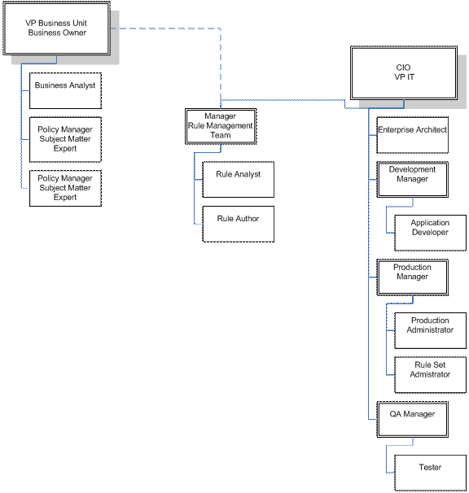

| Artifact: Organization Chart |
 |
|
Purpose
The following diagram represents a pattern of organization we can leverage when designing the rule governance processes.  |
Relationships
| Roles | Responsible: | Modified By: |
|---|---|---|
| Tasks | Input To: | Output From: |
Description
This program and the accompanying materials are made available under the |